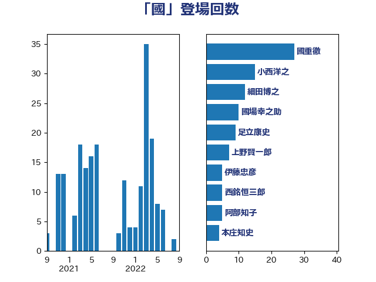

単語「國」

| 國重徹 | 公明党 | 27 回 |
| 小西洋之 | 立憲民主党 | 15 回 |
| 細田博之 | 自由民主党 | 12 回 |
| 國場幸之助 | 自由民主党 | 10 回 |
| 足立康史 | 日本維新の会 | 9 回 |
| 上野賢一郎 | 自由民主党 | 7 回 |
| 伊藤忠彦 | 自由民主党 | 5 回 |
| 西銘恒三郎 | 自由民主党 | 5 回 |
| 阿部知子 | 立憲民主党 | 5 回 |
| 本庄知史 | 立憲民主党 | 4 回 |
| 河西宏一 | 公明党 | 4 回 |
| 北側一雄 | 公明党 | 3 回 |
| 宮崎政久 | 自由民主党 | 3 回 |
| 新藤義孝 | 自由民主党 | 3 回 |
| 森英介 | 自由民主党 | 3 回 |
| 渡辺周 | 立憲民主党 | 3 回 |
| あべ俊子 | 自由民主党 | 2 回 |
| 今枝宗一郎 | 自由民主党 | 2 回 |
| 古川禎久 | 自由民主党 | 2 回 |
| 吉田宣弘 | 公明党 | 2 回 |
| 小林鷹之 | 自由民主党 | 2 回 |
| 山口俊一 | 自由民主党 | 2 回 |
| 平沢勝栄 | 自由民主党 | 2 回 |
| 松下新平 | 自由民主党 | 2 回 |
| 橋本岳 | 自由民主党 | 2 回 |
| 海江田万里 | 立憲民主党 | 2 回 |
| 葉梨康弘 | 自由民主党 | 2 回 |
| 西村智奈美 | 立憲民主党 | 2 回 |
| 赤嶺政賢 | 日本共産党 | 2 回 |
| 金田勝年 | 自由民主党 | 2 回 |
| 務台俊介 | 自由民主党 | 1 回 |
| 吉田豊史 | 日本維新の会 | 1 回 |
| 大塚拓 | 自由民主党 | 1 回 |
| 奥野総一郎 | 立憲民主党 | 1 回 |
| 安江伸夫 | 公明党 | 1 回 |
| 山岸一生 | 立憲民主党 | 1 回 |
| 山田賢司 | 自由民主党 | 1 回 |
| 本村伸子 | 日本共産党 | 1 回 |
| 柴山昌彦 | 自由民主党 | 1 回 |
| 根本匠 | 自由民主党 | 1 回 |
| 櫻井周 | 立憲民主党 | 1 回 |
| 渡辺博道 | 自由民主党 | 1 回 |
| 秋野公造 | 公明党 | 1 回 |
| 穀田恵二 | 日本共産党 | 1 回 |
| 若宮健嗣 | 自由民主党 | 1 回 |
| 茂木敏充 | 自由民主党 | 1 回 |
| 荒井優 | 立憲民主党 | 1 回 |
| 菊田真紀子 | 立憲民主党 | 1 回 |
| 赤澤亮正 | 自由民主党 | 1 回 |
| 赤羽一嘉 | 公明党 | 1 回 |
| 鈴木宗男 | 日本維新の会 | 1 回 |
| 長峯誠 | 自由民主党 | 1 回 |
| 阿部司 | 日本維新の会 | 1 回 |
| 階猛 | 立憲民主党 | 1 回 |